ESS 3500 R Handbook, Lesson 11
Emily Schultz
2023-02-15
Lesson 11: Multiple Predictors
In the previous lessons, we have worked with models that have only one independent and one dependent variable. However, it is common to have more than one independent variable that we would like the test. This is often particularly true when we do observational studies, and there are a whole suite of variable that might affect the response we measure. In this lesson, we will cover models with multiple predictors. We will focus on examples with only two predictors, but the methods can easily be extended to include more than two predictors as well.
For these examples, we will only look at the likelihood approach, which can be more powerful for testing multiple alternative hypothesis. However, similar tests can be done with a classic frequentist approach, using two-way ANOVAs, stepwise regression, and ANCOVAs for the three examples, respectively.
11.1 Two categorical variables (Two-way ANOVA)
For our first example, we will work with two categorical predictor variables. We will use a data set from the arthropod world this time, testing whether levels of an amino acid, alanine, vary between different species and different sexes of millipedes.
Visualizing and building the models
We’ll start off by loading and visualizing our data. Be sure your working directory is set to the location of the millipedes data file. We will also need to change the “species” variable to a factor.
mill <- read.csv("millipedes.csv")
mill$species <- as.factor(mill$species)Now, let’s make a box plot to visualize our data set. This will allow us to start looking at the patterns in the data, and also check our assumption of equal variances. We will put species on the x-axis and group and color our boxes by sex.
library(ggplot2)
ggplot(mill, aes(x=species, y=Alanine, fill=sex)) +
geom_boxplot() +
scale_fill_manual(values=c("#ce9642","#3b7c70")) +
labs(x="Species", y="Alanine levels", fill = "Sex") +
theme_classic()
Based just on the graph, what patterns do you see in the data. Does species have an effect? What about sex? Does there appear to be an interaction between the two variables?
Looking at our boxplot, the variances look fairly equal between the two groups, so let’s proceed with building our models. Now that we are working with two predictor models, we will have multiple alternative models representing four different hypotheses: (1) only sex matters, (2) only species matters, (3) both sex and species matter but don’t interact, (4) both sex and species matter and they interact. The models are built in this order after the null model below.
mill_null <- lm(Alanine ~ 1, data = mill)
mill_sex <- lm(Alanine ~ sex, data = mill)
mill_species <- lm(Alanine ~ species, data = mill)
mill_both <- lm(Alanine ~ sex + species, data = mill)
mill_int <- lm(Alanine ~ sex*species, data = mill)To view the output of your models, type the name of each model. Just like when we have worked with this model before, the null model will have just an intercept. However, the alternative models will have multiple coefficients. Let’s take a look at a couple of them.
First, view the coefficients of the mill_both model. You
should see four coefficients. After the intercept, the first coefficient
you will see is labeled “sexm”. This is the value you would add to the
intercept to get the alanine levels in male millipedes. Then you will
see two intercepts for species. The first (species2) tells you what to
add to the intercept to get alanine leves for species 2 (for a male of
species 2, you would add both the sexm and species2 coefficients). The
final coefficient is what you would add to the intercept to get the
alanine levels for species 3.
Now, view the coefficients of the mill_int model. Now,
you will see two additional coefficients representing interactions
between the sex and species variables. Based on this model, if you had a
male of species 2, in addition to adding the sexm and species2
coefficients, you would also add the sexm:species2 coefficient, which
account for how sex interacts with being species 2. For a male of
species 3, you would similarly add the coefficient for
sexm:species3.
I personally find it difficult to interpret what the interaction looks like just based on the coefficients. This is where our graphs can come in handy. Looking at our boxplot can help us see the nature of the interaction, if any, between our variables.
Before we move on to testing our models, lets also check our assumption of normality. We will save the residuals from each model and look at the associated qqplots (you could make histograms instead if you find those easier to interpret).
resid_null <- resid(mill_null)
resid_sex <- resid(mill_sex)
resid_species <- resid(mill_species)
resid_both <- resid(mill_both)
resid_int <- resid(mill_int)qqnorm(resid_null)
qqline(resid_null)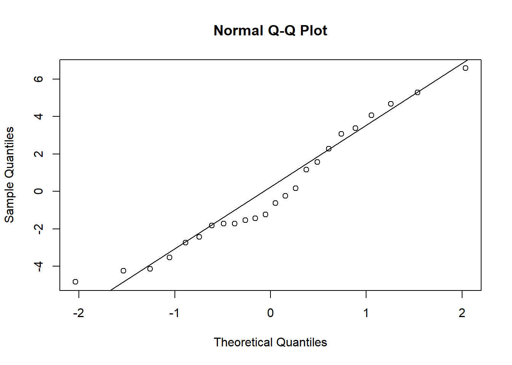
qqnorm(resid_sex)
qqline(resid_sex)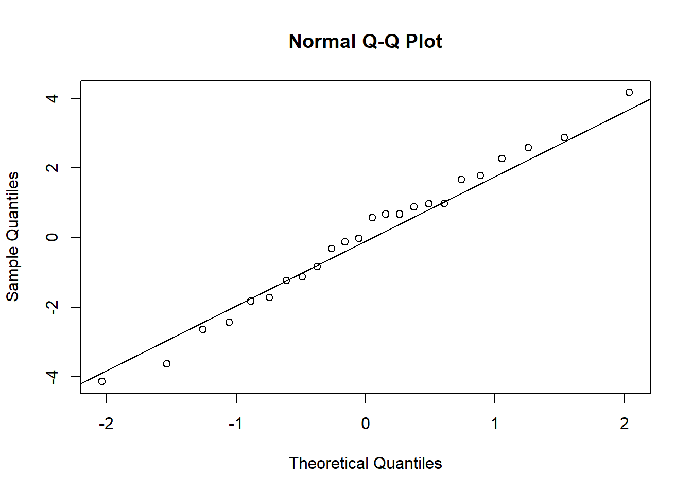
qqnorm(resid_species)
qqline(resid_species)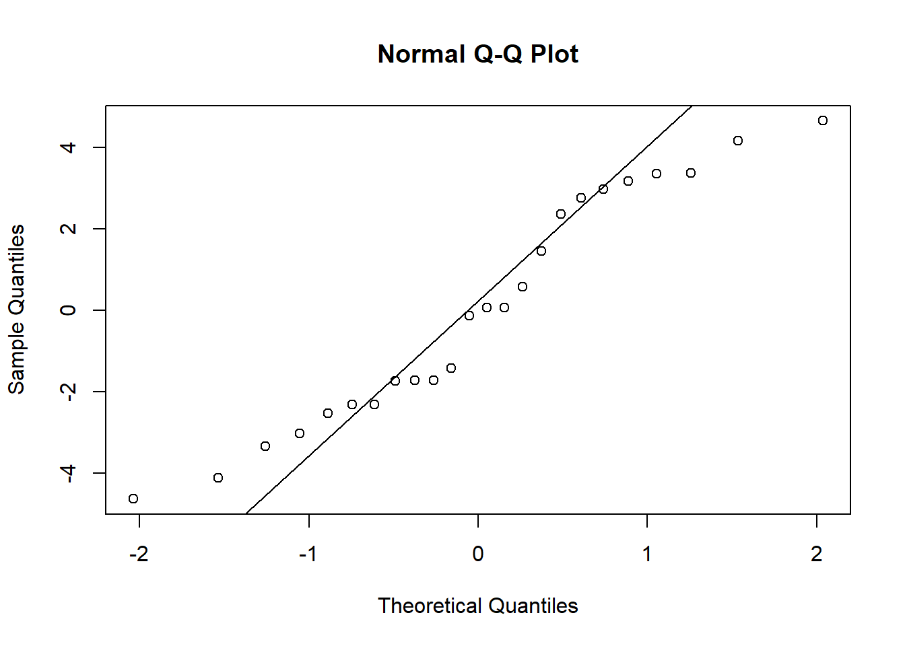
qqnorm(resid_both)
qqline(resid_both)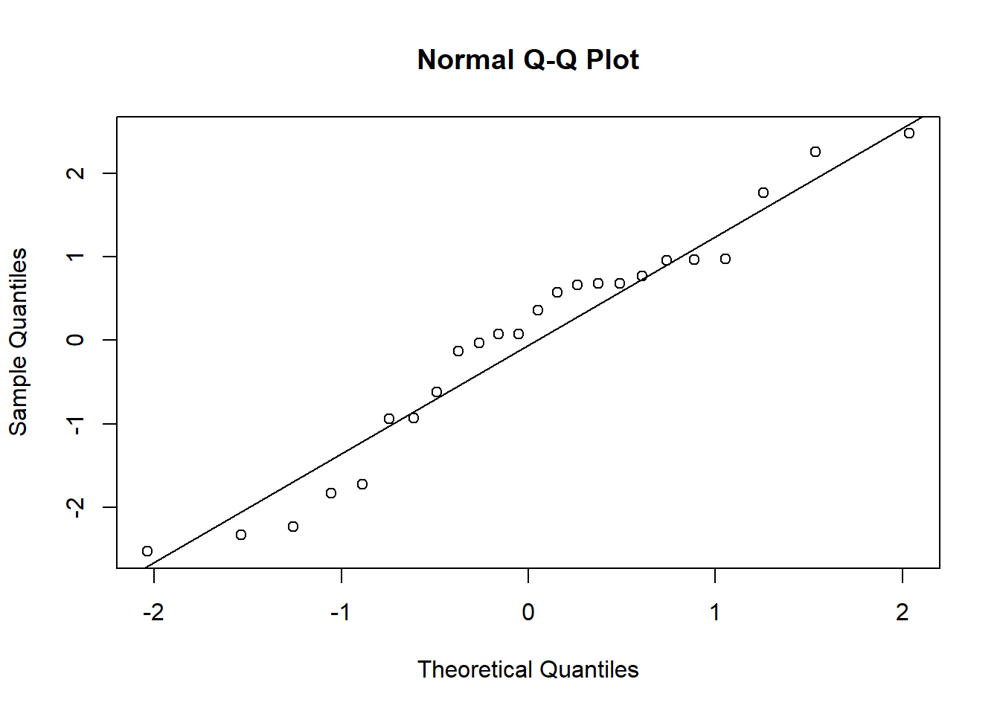
qqnorm(resid_int)
qqline(resid_int)
The distributions of some of the residuals probably aren’t normal for most of the models, but there is also no sign of a lot of skew. The ones that are not normal are probably fairly flat distributions. Therefore, we can probably be comfortable moving ahead with the tests.
Testing the models
Again, for testing our models with multiple predictors, we will just
focus on using the likelihood approach. As we have for previous tests,
we will use the AIC function to compare our models, but
this time we have five different models to compare, instead of just two.
We can compare all five at the same time.
AIC(mill_null,mill_sex,mill_species,mill_both,mill_int)## df AIC
## mill_null 2 127.25979
## mill_sex 3 108.40041
## mill_species 4 124.94574
## mill_both 5 93.14672
## mill_int 7 93.14888Based on the output table, which model was the best? Was it significantly better than the next best model? What do the differences in AIC values tell you about the effects of each predictor and their interaction?
11.2 Two continuous predictors (multiple regression)
For our next example, we will work with two continuous predictor variable, sometimes called a multiple regression. We will use the carbon storage data set that we worked with once before, but this time will will look at some additional variables and consider how the levels of active bacteria and active fungi in the soil affect total carbon storage.
Visualizing and building the models
First, load the data.
carbon <- read.csv("carbon.csv")There are many variables in the data set, but we will just focus on a few. “Tc” will be our response variable and “Active_Bacteria” and “Active_Lifespan” will be our two predictor variables.
Now let’s graph our data. It is challenging to visualize two continuous predictor variable at the same time (I think 3D graphs are hard to read). One option is just to make separate scatter plots for each predictor, but that does not allow you to see interactions between the two variables. What I often do is convert one of the predictors to a categorical variable (just for the graph, not for the test), and graph both of the predictors at the same time. We’ll try that.
First, we will use the mutate function to create a new
variable that converts active fungi to a category. We will just use two
categories: high and low. High active fungi will be anything above the
median active fungi from our data set, and low weight will be anything
less than or equal to the median. To to this, we will use the
ifelse function. This function allows us to set a value for
something if it matches certain criteria (in this case,
if the active fungi is greater than the median) and set a different
values if it does not match the criteria.
library(tidyverse)
med <- median(carbon$Active_Fungi)
carbon <- mutate(carbon,Fungi_cat = ifelse(Active_Fungi > med, "High", "Low"))If you view the data set, you will now see a new variable called “Weight_cat” that we will use to graph our data. Let’s make that graph now. We will use “Lifespan” as our x variable, and we will use two different colors to represent our two weight categories.
ggplot(data=carbon, aes(x=Active_Bacteria,y=Tc,color=Fungi_cat)) +
geom_point() +
geom_smooth(method="lm") +
scale_color_manual(values=c("#ce9642","#3b7c70")) +
labs(x="Active bacteria", y="Total carbon storage",color="Active fungi") +
theme_classic()## `geom_smooth()` using formula = 'y ~ x'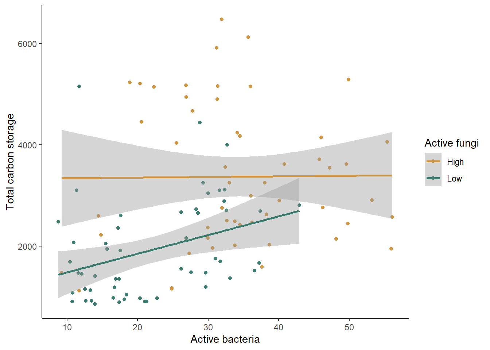
What are your initial interpretations based on the graph?
Now, let’s build our models. Just like our first example, we will have multiple alternative models that we test.
carbon_null <- lm(Tc ~ 1, data = carbon)
carbon_bac <- lm(Tc ~ Active_Bacteria, data = carbon)
carbon_fungi <- lm(Tc ~ Active_Fungi, data = carbon)
carbon_both <- lm(Tc ~ Active_Bacteria + Active_Fungi, data = carbon)
carbon_int <- lm(Tc ~ Active_Bacteria*Active_Fungi, data = carbon)Look at the summaries for some of your models. Do the coefficients for the different variable make sense based on what you saw in your graph?
We will again check our assumption of normality before testing the models.
resid_null_carbon <- resid(carbon_null)
resid_bac_carbon <- resid(carbon_bac)
resid_fungi_carbon <- resid(carbon_fungi)
resid_both_carbon <- resid(carbon_both)
resid_int_carbon <- resid(carbon_int)qqnorm(resid_null_carbon)
qqline(resid_null_carbon)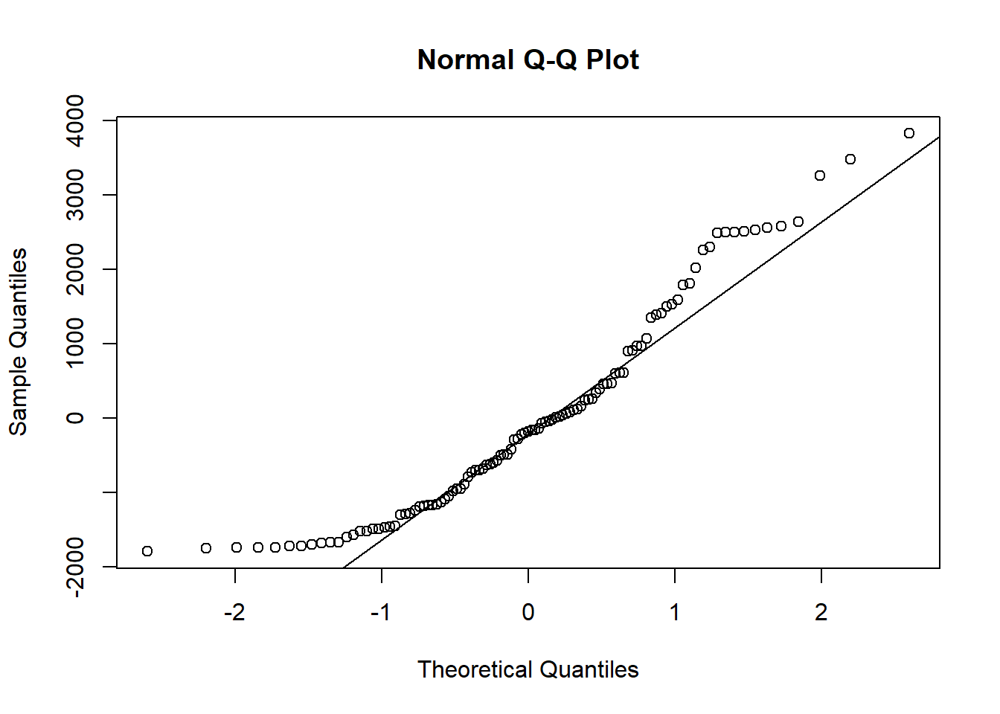
qqnorm(resid_bac_carbon)
qqline(resid_bac_carbon)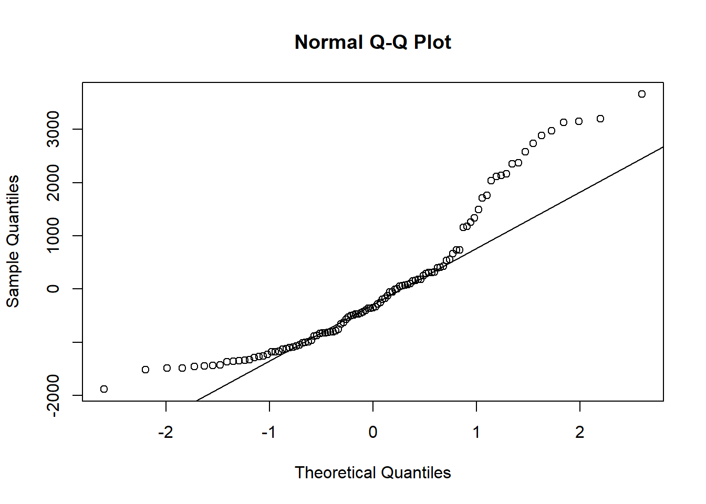
qqnorm(resid_fungi_carbon)
qqline(resid_fungi_carbon)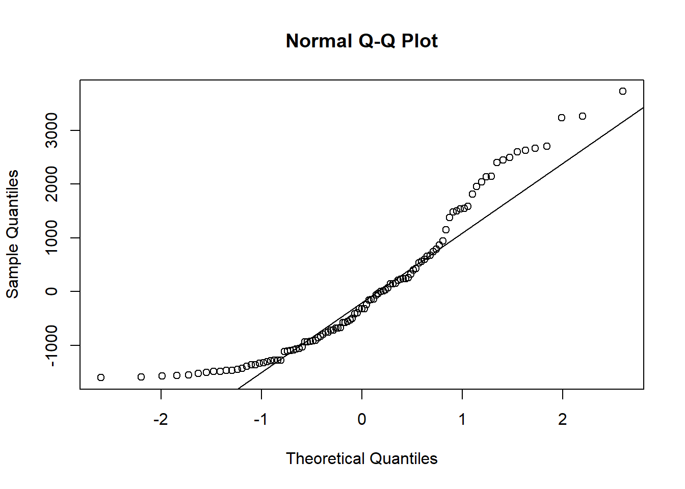
qqnorm(resid_both_carbon)
qqline(resid_both_carbon)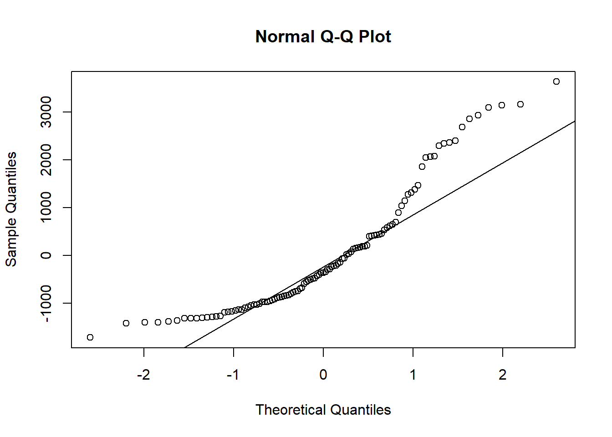
qqnorm(resid_int_carbon)
qqline(resid_int_carbon)
Yikes, this time, it looks like we have some skew in our data based
on the curved shape of the points in our qqplots. Before we run the
tests, we’ll try a log transform to see if that makes our residuals less
skewed. We can actually do this transform right in the formula of our
linear model, instead of adding a new variable. We will just add the
log function to our dependent variable (Tc).
carbon_null <- lm(log(Tc) ~ 1, data = carbon)
carbon_bac <- lm(log(Tc) ~ Active_Bacteria, data = carbon)
carbon_fungi <- lm(log(Tc) ~ Active_Fungi, data = carbon)
carbon_both <- lm(log(Tc) ~ Active_Bacteria + Active_Fungi, data = carbon)
carbon_int <- lm(log(Tc) ~ Active_Bacteria*Active_Fungi, data = carbon)Look at the summaries for some of your models. Do the coefficients for the different variable make sense based on what you saw in your graph?
Now, we will check the residuals again, using the models with the log transformed data.
resid_null_carbon <- resid(carbon_null)
resid_bac_carbon <- resid(carbon_bac)
resid_fungi_carbon <- resid(carbon_fungi)
resid_both_carbon <- resid(carbon_both)
resid_int_carbon <- resid(carbon_int)qqnorm(resid_null_carbon)
qqline(resid_null_carbon)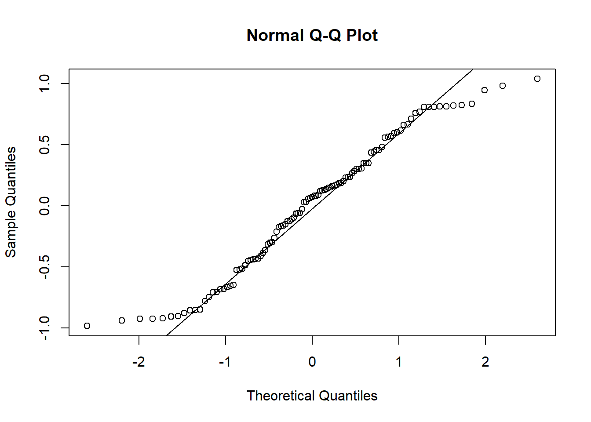
qqnorm(resid_bac_carbon)
qqline(resid_bac_carbon)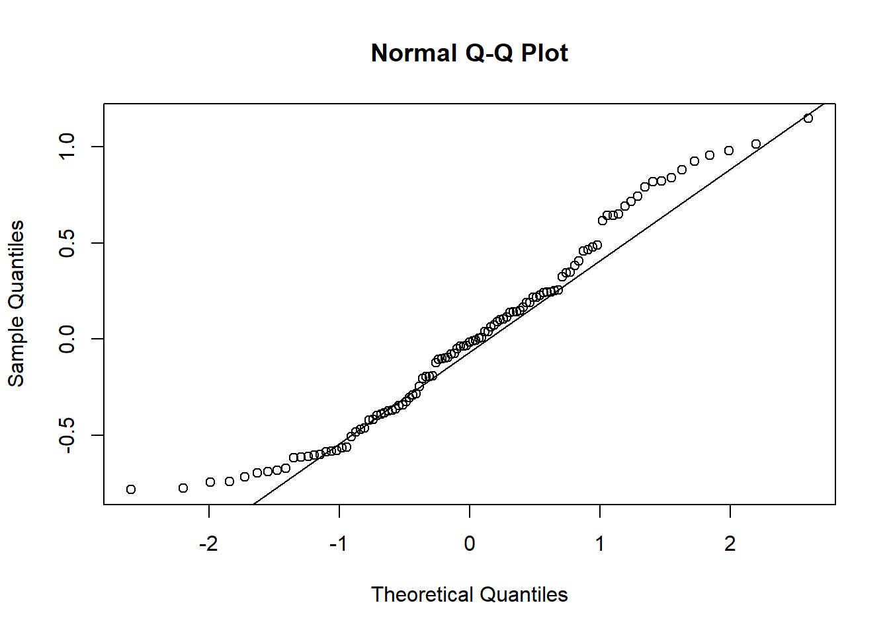
qqnorm(resid_fungi_carbon)
qqline(resid_fungi_carbon)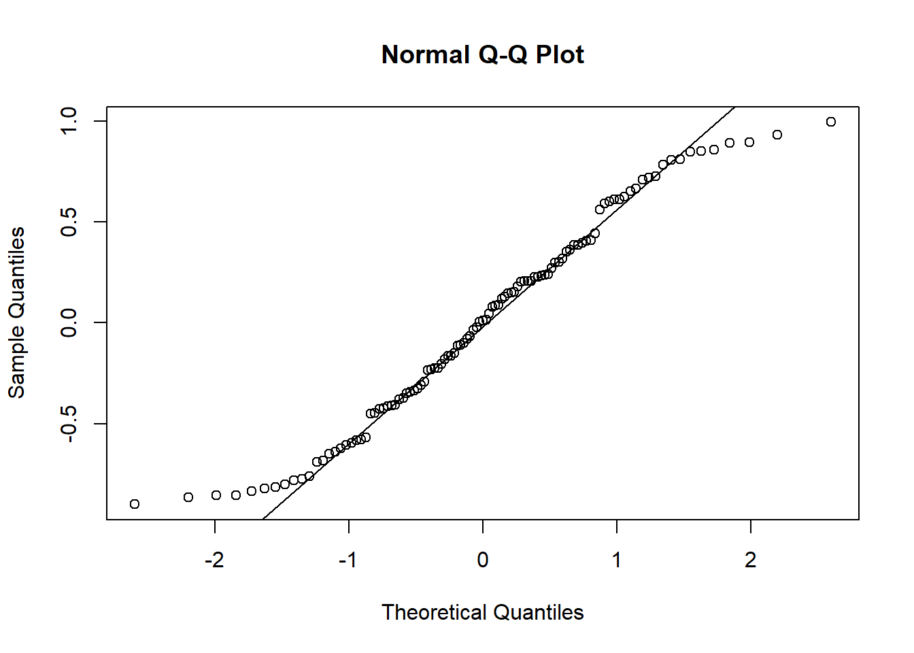
qqnorm(resid_both_carbon)
qqline(resid_both_carbon)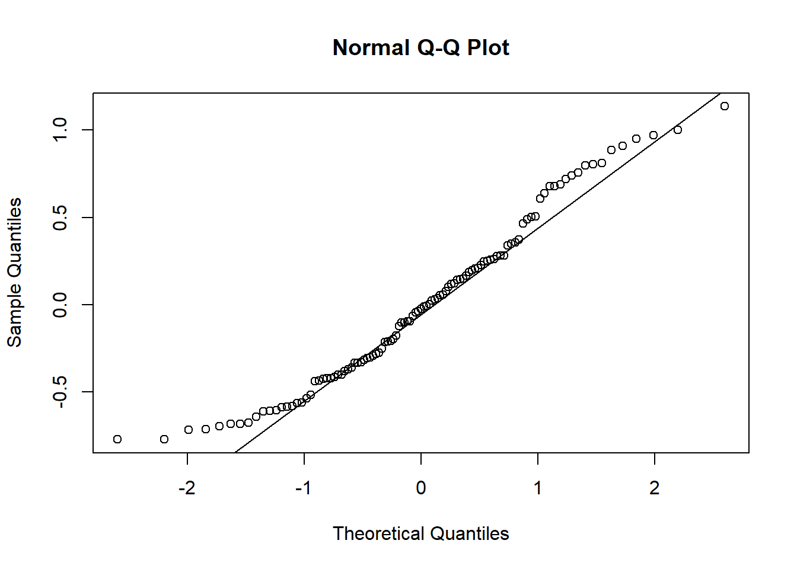
qqnorm(resid_int_carbon)
qqline(resid_int_carbon)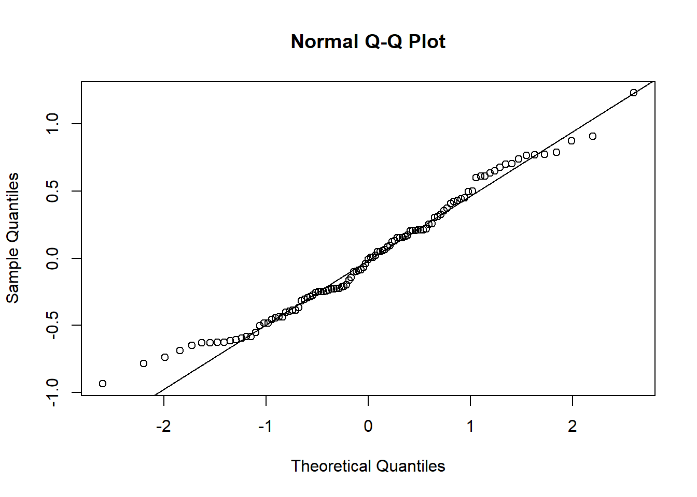
These look better now, so we’ll move on with testing our models.
Testing the models
To test the models, we will use the same approach that we used with the first example.
AIC(carbon_null,carbon_bac,carbon_fungi,carbon_both,carbon_int)## df AIC
## carbon_null 2 177.1537
## carbon_bac 3 154.9944
## carbon_fungi 3 167.1470
## carbon_both 4 154.3212
## carbon_int 5 145.0235Based on the AIC models, which model is the best? Is it significantly better than the others? Given this, along with the coefficients from the best model and the patterns you see in your graph, what can you conclude about the effects of the two predictor variables (bacteria and fungi levels)?
11.3 Continuous and categorial predictors
For our final example, we will look at a blend of the previous two types of predictors and consider a case where we have one continuous and one categorical predictor. We will use an example of butterfly endurance and how it is affected by both temperature and the genotype of the butterfly.
Visualizing and building the models
butterfly <- read.csv("butterfly.csv")ggplot(data=butterfly, aes(x=Temp,y=Endurance,color=Genotype)) +
geom_point() +
geom_smooth(method="lm") +
scale_color_manual(values=c("#ce9642","#3b7c70","#3b3a3e")) +
labs(x="Temperature") +
theme_classic()## `geom_smooth()` using formula = 'y ~ x'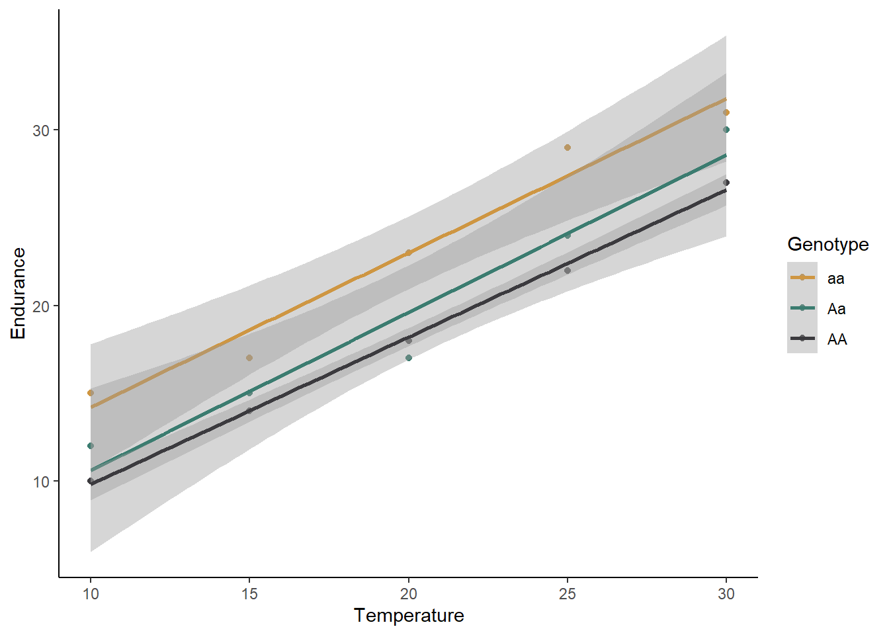
What is your initial interpretation for how temperature and genotype affect the endurance of butterflies, based on the graph? Does unequal variances seem to be a problem?
We will now move on to building our models: one null model and our four different alternative models.
butter_null <- lm(Endurance ~ 1, data=butterfly)
butter_temp <- lm(Endurance ~ Temp, data=butterfly)
butter_geno <- lm(Endurance ~ Genotype, data=butterfly)
butter_both <- lm(Endurance ~ Temp + Genotype, data=butterfly)
butter_int <- lm(Endurance ~ Temp*Genotype, data=butterfly)Before testing these models, we’ll check our residuals for normality.
resid_null_butter <- resid(butter_null)
resid_temp_butter <- resid(butter_temp)
resid_geno_butter <- resid(butter_geno)
resid_both_butter <- resid(butter_both)
resid_int_butter <- resid(butter_int)qqnorm(resid_null_butter)
qqline(resid_null_butter)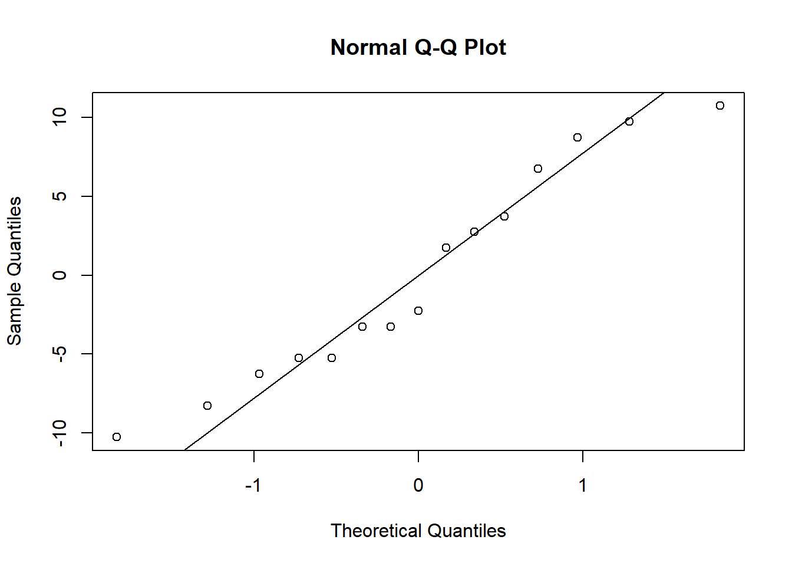
qqnorm(resid_temp_butter)
qqline(resid_temp_butter)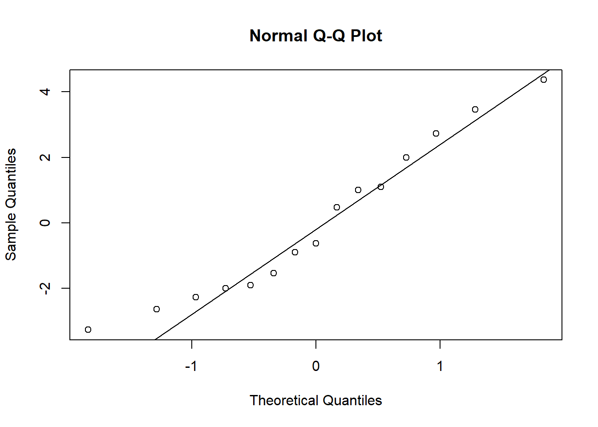
qqnorm(resid_geno_butter)
qqline(resid_geno_butter)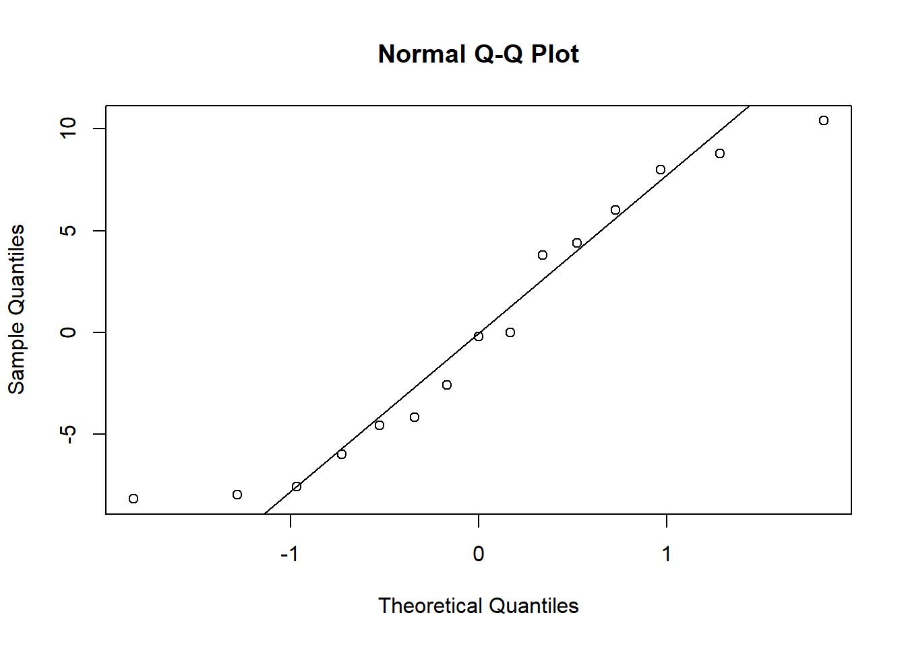
qqnorm(resid_both_butter)
qqline(resid_both_butter)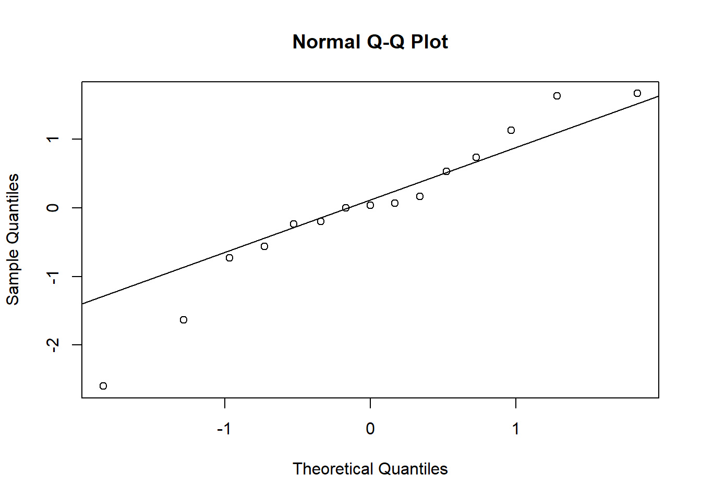
qqnorm(resid_int_butter)
qqline(resid_int_butter)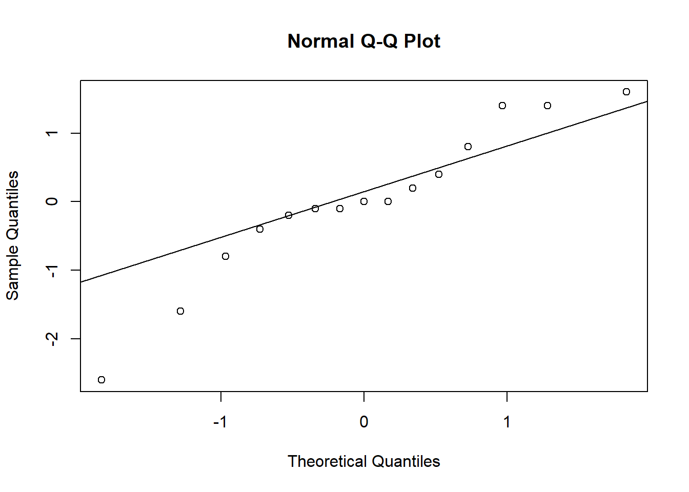
Once again, the residuals don’t look quite normal, but there doesn’t seem to be a lot of skew, so we’ll move on with testing our models.
Testing the models
Using the likelihood approach, we can again just use the
AIC function to compare our five models:
AIC(butter_null,butter_temp,butter_geno,butter_both,butter_int)## df AIC
## butter_null 2 103.12351
## butter_temp 3 73.47012
## butter_geno 4 105.64924
## butter_both 5 55.27518
## butter_int 7 58.88042Based on these AIC values, what can you conclude about the effects of temperature, genotype, and their interaction on butterfly endurance?